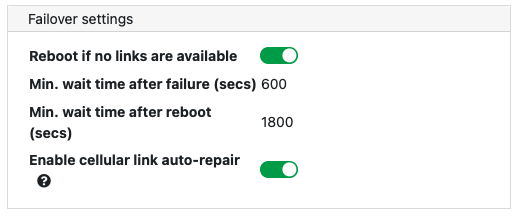
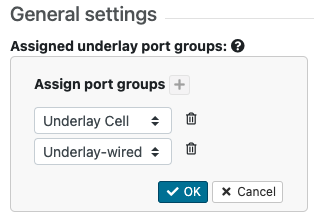

Manage Failover between Underlay Port Groups
Set up your Airwall Gateways with multiple wired and wireless underlay port groups and configure which port group to use based on simple network criteria.
- Supported roles
-
- System Administrator
- Network administrator with permissions to edit Airwall settings
Managing the Active Network with Failover Groups
You can assign one or more failover groups to underlay port groups on an Airwall Gateway. Failover groups continuously monitor health indicators on the networks of their assigned port groups and manage which one is active based on both the current network health indicators and a relative priority assigned to each port group within the failover group.
The health criteria that a failover group monitors on the network are:
- Wired interface link status – If the failover group detects that a port is missing a link, or the layer 3 configuration is bad (for example, has no IP address), the port group is considered failed and is not selected.
- Cellular modem status – If there are error conditions on the cellular modem, the failover group sets the corresponding cellular port group as failed.
- Active monitoring of selected destinations – You can specify destinations to have the failover group actively check if they are responding. It will ping these destinations and monitor their response. If the pings are successful, the corresponding underlay port group is considered functional. See Ping Settings below.
- Passive monitoring – The Airwall Gateway uses the currently active Conductor connection as a secondary indicator to determine network health if no active monitor is running.
Based on these monitoring criteria, the failover group scores each assigned port group and selects the one with the highest score. If more than one port group gets the highest score, the failover group selects the port group that has the highest priority.
Set Failover group settings for the Airwall Gateway
- Go to Airwalls and select an Airwall Gateway.
- Go to .
-
Under Failover settings, set the common settings to
be used by all port failover groups on the Airwall Gateway:

- Reboot if no links are available – Enable to reboot the Airwall Gateway if none of the failover groups have any healthy networks, in an
attempt to restore the network. The following additional settings
also apply to the reboot:
- Min. wait time after failure – Specify how many seconds to wait after detecting that all port groups have failed before rebooting. Default: 600 seconds
- Min. wait time after reboot – Specify how many seconds to wait before the next reboot if the network remains unavailable after a reboot. Set this to a higher value than the initial wait time to prevent constant reboot loops if the network is unavailable for extended time periods. Default: 1800 seconds
- Enable cellular link auto-repair – Enable on cellular Airwall Gateways only to attempt to restore a failed cellular modem after detecting that the cellular network is not responding (by re-initializing the modem drivers).
Note: For these settings to take effect, you need to set up at least one failover group on this Airwall Gateway. - Reboot if no links are available – Enable to reboot the Airwall Gateway if none of the failover groups have any healthy networks, in an
attempt to restore the network. The following additional settings
also apply to the reboot:
Create a Port Failover Group
- Under Failover group, select the + (plus sign) to create a new failover group. The Conductor creates a new failover group with default values. You can click on the name to edit it.
-
Under , assign underlay
port groups to this failover group:

- Click on this setting to edit it.
- Next to Assign port groups, select the + (plus sign) to add one of the unassigned underlay port groups to this failover group.
- Select the arrows to choose a different port group, and arrange them from top to bottom in priority order.
- Select OK to save your settings.
-
Still under General settings, select the traffic
types:
-
Under Ping settings, configure any destinations you
want to ping to actively monitor the network, along with the ping settings.

- Ping rate – Set the rate at which the failover group sends out pings, in seconds.
- Ping failure count – The number of successive ping failures required to consider the ping monitor failed. If the pings are unreliable, you can set a higher number to help stabilize the network selection.
- Enable pings on active link – Disable to suspend pings for the port group that is currently active. The failover group then does only passive monitoring to detect status changes on the port group.
- Ping timeout – The time to wait for ping replies before setting the ping as failed, in seconds.
- Ping TTL – The time-to-live counter. You usually do not need to change this setting. If you want to speed up the time to failure and know the maximum number of hops to the ping destination, you can set the Ping TTL to a lower value.
- Ping destinations –
- Check Airwall Conductor to ping the Conductor configured on this Airwall Gateway. Note that checking this option includes any additional Conductors configured on the Airwall Gateway as well as the High-availability (HA)-peer Conductor if Conductor HA is configured.
- Other underlay IPs or hostnames – Add any IP addresses and hostnames to ping, separating them with commas.
- All pings must be successful – Leave this box clear so that only a single ping to any of the IPs must be successful for the ping monitor to be successful (recommended). Check to require that all specified IPs and hostnames must respond to be considered successful.
- Select OK to save your settings.
Managed and unmanaged port groups
By default, when you first create an underlay port group, it is unmanaged, meaning it won’t be automatically assigned to any failover group. If a port group is unmanaged, the Airwall Gateway does not monitor health indicators and won’t fail over. The Conductor may still use unmanaged ports for any type of traffic, but if an unmanaged port fails, the Airwall Gateway relies on the underlay networking to recover.
Cellular Airwall Gateways automatically create and assign a failover group when initialized or factory reset. This failover group is configured with cellular and wired ports, and assigns the wired port a higher priority than the cellular. Wired-only Airwall Gateways do not create a default failover group and any wired port groups are left unmanaged.